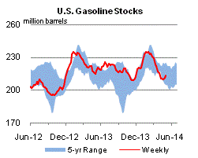

Released: May 7, 2014
Next Release: May 14, 2014
EIA expects crude oil prices to decline in 2014
In its May Short-Term Energy Outlook (STEO), EIA forecasts that the spot price of North Sea Brent crude oil will fall through the remainder of 2014, declining from current levels of $108 per barrel (bbl) to average $103/bbl during the fourth quarter (Figure 1). For full-year 2014, EIA expects the Brent price to average $106/bbl, down $2 from the 2013 average, but more than $1 higher than last month´s forecast. EIA expects crude prices to decline through the end of the year as demand for OPEC crude falls to offset the combined increases in non-OPEC total liquids supply and OPEC noncrude supply, which are projected to exceed growth in world liquids demand.
{kind=link}
Since mid-2013, Brent prices have been relatively stable. In April, the Brent spot price averaged $108/bbl, the 10th consecutive month Brent prices averaged between $107/bbl and $112/bbl. This stability results in part from growing U.S. crude oil production from tight oil plays that has made crude oil previously imported to the United States available to the global market. Higher U.S. production has helped to offset relatively high levels of unplanned supply disruptions in 2013-14. In April, global unplanned supply disruptions averaged 3.2 million bbl/d, about 0.6 million bbl/d higher than the 2013 average. OPEC countries accounted for 2.6 million bb/d of the global total.
EIA expects Brent prices to gradually move below the $107-$112/bbl range during the second half of the year, averaging $106/bbl during the third quarter and $103/bbl during the fourth quarter. The projected larger fourth-quarter price decline is the result of non-OPEC liquids and OPEC noncrude liquids supply increasing by 120,000 bbl/d and 30,000 bbl/d, respectively, from the third quarter, while global consumption is expected to remain flat. Flat consumption and growing non-OPEC supply will lower the call on OPEC crude oil and global inventories. As a result, EIA expects OPEC surplus production capacity, which is concentrated in Saudi Arabia, to average 2.8 million bbl/d in the fourth quarter, an increase of 0.6 million from the third quarter. Combined, these factors are expected to put moderate downward pressure on prices.
The current 2014 forecast average of $106/bbl is more than $1 higher than EIA´s April forecast because of a slightly tighter-than-expected market balance. The $1 increase in the forecast 2014 average price reflects expectations that total global liquids supply growth will be 240,000 bbl/d lower in 2014 than projected in last month´s STEO, while 2014 global consumption will be only 50,000 bbl/d lower than previously projected.
While growing U.S. crude oil production is expected to contribute to lower global crude oil prices, the downward pressure on the price of U.S. crude is expected to be more significant. EIA expects the price of West Texas Intermediate (WTI) crude to decline at a slightly faster pace than the price of Brent through the rest of the year. In April, WTI traded at an average discount to Brent of $6/bbl. EIA expects this discount to widen to an average of $10 in the third quarter and $12 in the fourth quarter; thus, WTI is expected to fall to an average of $92/bbl in the fourth quarter. The widening spread reflects the economics of running increasing volumes of very light crude oil at U.S. Gulf Coast refineries and the transportation costs of moving U.S. crude oil production to marginal markets on the U.S. East and West Coasts.
Gasoline and diesel fuel prices decrease
The U.S. average retail price of regular gasoline decreased three cents to $3.68 per gallon as of May 5, 2014, 15 cents higher than last year at this time. Prices decreased in all regions of the nation except the Rocky Mountains, where the average rose by two cents to $3.50 per gallon. The largest gasoline price decrease occurred in the Midwest, where prices fell seven cents to $3.60 per gallon. The Gulf Coast price decreased three cents to $3.47 per gallon, while the West Coast price was $4.06 per gallon, down two cents from last week. The East Coast price decreased by a penny to $3.70 per gallon.
The national average diesel fuel price decreased one cent to $3.96 per gallon, 12 cents more than last year at this time. Prices decreased in all regions of the nation, with the Midwest, East Coast, Gulf Coast, and West Coast prices all down by a penny, to $3.94 per gallon, $4.06 per gallon, $3.81 per gallon, and $4.05 respectively. The Rocky Mountain price decreased by less than a penny from last week to remain at $3.98 per gallon.
Propane inventories gain
U.S. propane stocks increased by 3.7 million barrels last week to 35.2 million barrels as of May 2, 2014, 5.7 million barrels (14.0%) lower than a year ago. Gulf Coast inventories increased by 2.2 million barrels and Midwest inventories increased by 1.1 million barrels. Rocky Mountain/West Coast and East Coast inventories both increased by 0.2 million barrels. Propylene non-fuel-use inventories represented 9.9% of total propane inventories.
Text from the previous editions of This Week In Petroleum is accessible through a link at the top right-hand corner of this page.
| Retail Data | Change From Last | Retail Data | Change From Last | ||||
| 05/05/14 | Week | Year | 05/05/14 | Week | Year | ||
| Gasoline | 3.684 | Diesel Fuel | 3.964 | ||||
|
 |
||||||||||||||||||||||||||
| *Note: Crude Oil Price in Dollars per Barrel. | |||||||||||||||||||||||||||
|  | |||||||
| Stocks Data | Change From Last | Stocks Data | Change From Last | ||||
| 05/02/14 | Week | Year | 05/02/14 | Week | Year | ||
| Crude Oil | 397.6 | Distillate | 114.0 | ||||
| Gasoline | 213.2 | Propane | 35.249 | ||||